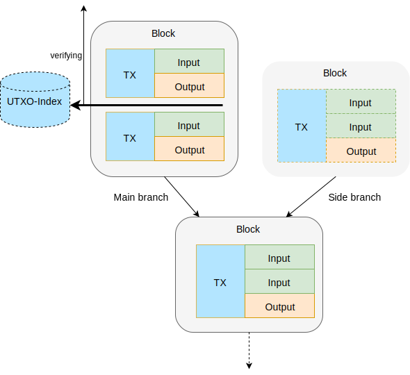

Transaction verification can be roughly divided in two phases. Script verification occurs when a transaction arrives, and includes the expensive witness verification. Order verification is performed when a block comes in, and checks whether the transaction is allowed at its location in the chain. This means that for all its inputs, the corresponding outputs must precede the transaction in the chain and may not be already spend at that point.
To see how Bitcoin Core verifies order, let us consider a part of the blockchain tree where two blocks are competing at the tip:

Bitcoin Core maintains a UTXO-index, an index of all unspent outputs that is used (besides script-validation) to check the order-validity at a given point, and that is updated after verification of each transaction. Because it always applies to a single point in the tree, it requires linearizing the tree. One branch (the longest) is dubbed the main branch while others are dubbed side-branches.

The drawback of this approach, is that the UTXO-index must be validated and updated sequentially for each transaction because each transaction may reference the previous one. On top of that, whenever a side branch is promoted to main branch, the UTXO-index needs to be "moved": all changes caused by the transactions in the blocks of the main branch must be reverted before the side branch can be verified. An expensive process called a reorg.
Bitcrust solves these bottlenecks by getting rid of the UTXO-index all together.
To verify order Bitcrust uses a compact representation of the blockchain, called the spend tree. It contains 64-bit records that can point to block headers, to transactions or for each input, to the output being spend. Each block in the spend-tree starts with a record that points to the end of the previous block.
Whenever a block is added to the spend-tree, each spend is verified simply by scanning back the tree. If the same spend is found, the block is rejected as a double-spend. If nothing is found the block is rejected as spending an non-existing output, and if the transaction with the output being spend is found, the spend is accepted.

The elegance of this approach is that the order of transactions can be verified fully in parallel in a highly cache efficient way. Not only can two competing blocks be verified at the same time, but within one block, every input can be verified in parallel as well.
Because the on disk structure is a tree, reorgs are simply the selection of another tip; the difference between main and side-branches no longer effects storage and validation and is left to higher layers of the software.
The vast majority of inputs is spending a recent output and for those, the spend tree is blazingly fast. Problems occur when an output from the early chain is being spent; in that case the spend-tree is too slow as it would require scanning millions of records.
Fast early spends are achieved with help of the spend index. This is a very compact bit index with one bit for each transaction and one for each output. The spend index serves as a broom wagon; it follows the tips but always lags a few blocks behind. Whenever verification in the spend-tree reaches the broom wagon, and no major split has taken place, the order can be verified with two simple lookups in the spend index: checking the presence of the transaction and the absence of the spend.
Because updates made to the spend-index always represent information that is not directly used as it is still being verified using the spend-tree, all reads and writes can still occur in parallel.
Like all data in Bitcrust, the spend-tree and spend-index use lock-free data structures and the Compare-And-Swap idiom to allow concurrent readers and writers even across processes.
Because the information which transactions are stored in which blocks is already persisted in the spend-tree, Bitcrust also uses a different storage model for block content. Block headers and transactions are stored separately, and transactions are stored immediately when they are script-verified, but still unconfirmed.
This means the "mempool" of unconfirmed is not necessarily kept in memory; only if disk cache pages (or memory map pages) are available as handled by the OS. Verified, unconfirmed transactions are actually bad candidates to force in memory because their content is rarely needed any time soon; the order validation when a block comes in, only uses their hashes and file pointers.
An additional advantage is that while the criteria for relaying transactions and for including them in blocks may be kept strict, the criteria for storing transactions can be relaxed without loss of efficiency. This can result in a high degree of transactions being pre-synchronized when a block arrives using Compact Blocks or XThin.
This could be even further optimized if miners were to use a strategy where they let incoming transactions "rest" for a while before including them in a block. This might yield pre-synchronization rates of near 100%, making even better use of the gains of the specialized order-verification of Bitcrust.
An interesting difference between Bitcrust and Core is the cost of what is known as "UTXO bloat".
The cost for a node to accept a transaction is not always the same. For implementations that use an UTXO-index, a transaction with 10 inputs and 1 output is much cheaper then a transaction with 1 input and 10 outputs, because the former reduced the UTXO-index by 9 items while the latter adds 9 items.
For the peak-load order validation, the asymmetry in cost for Bitcrust is reversed! The more inputs in a transaction, the bigger the growth of the spend-tree but the spend-tree is not effected by outputs at all. This is not to say that we should promote more outputs and less inputs as outputs still effect baseload script-verification, but it eliminated the negative effect of UTXO bloat during peak load order-verification.
The storage layer of Bitcrust is written in Rust and available at GitHub.
The first results are very promising, as the implementation seems to be not only faster than Core in order validation, but is also more performant in full block validation. Preliminary comparisons are published on this site